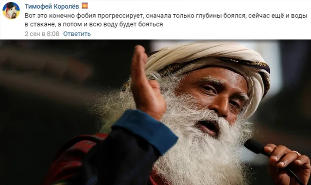
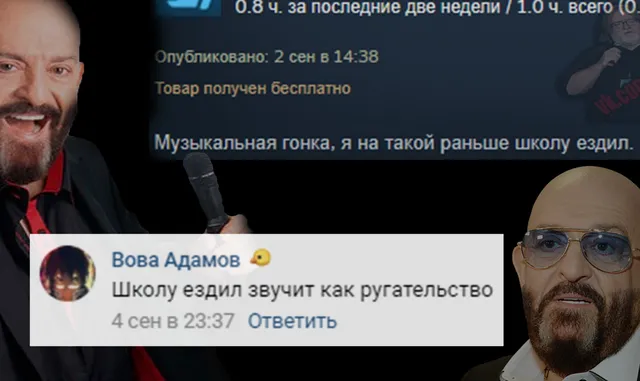
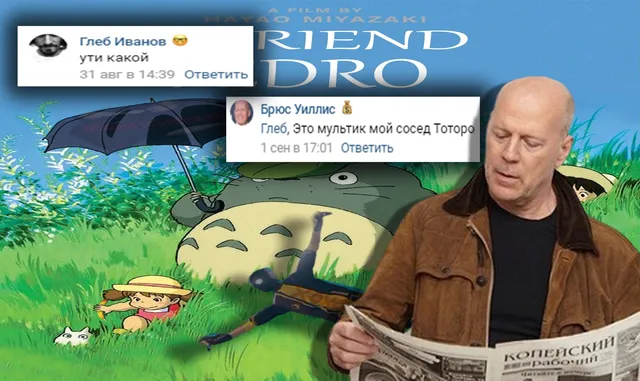
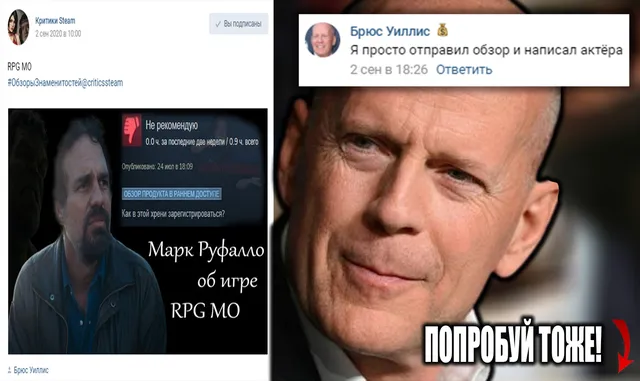

Ваши комментарии
ВКонтакте
🌇Встречаем новый выпуск еженедельной рубрики ваших комментариев!
6 сентября 2020 · №464 в выгрузке стены · оригинал во ВКонтакте ↗





#ВашиКомментарии@criticssteam #8
🌇Встречаем новый выпуск еженедельной рубрики ваших комментариев!
🌀Сегодня [https://vk.com/@criticssteam-sistema-titulov|титул Комментатора] получают:
[id347679904|Андрей Язин]
[id119602395|Вова Адамов]
[id491132613|Брюс Уиллис]
[id355653583|Тимофей Королёв]
[id191917835|Глеб Иванов]
===========
👻Пишите больше!
🌇Встречаем новый выпуск еженедельной рубрики ваших комментариев!
🌀Сегодня [https://vk.com/@criticssteam-sistema-titulov|титул Комментатора] получают:
[id347679904|Андрей Язин]
[id119602395|Вова Адамов]
[id491132613|Брюс Уиллис]
[id355653583|Тимофей Королёв]
[id191917835|Глеб Иванов]
===========
👻Пишите больше!